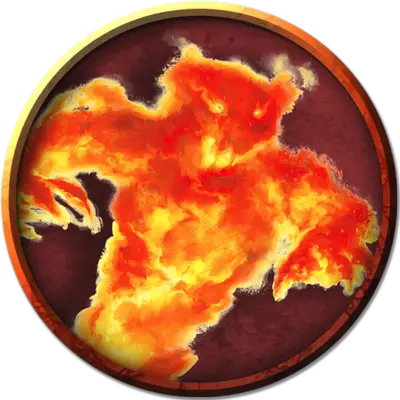

Маэгера, Титан Рассвета
Maegera the Dawn Titan
Громадный Элементаль, хаотично-нейтральный, именной НИП

Класс Доспеха 16
Хиты 341 (22к20 + 110)
Скорость 50 футов
| мод | спас | ||
|---|---|---|---|
| СИЛ | 21 | +5 | +5 |
| ЛОВ | 22 | +6 | +6 |
| ТЕЛ | 20 | +5 | +12 |
| мод | спас | ||
|---|---|---|---|
| ИНТ | 10 | +0 | +0 |
| МДР | 10 | +0 | +7 |
| ХАР | 19 | +4 | +11 |
Сопротивление урону дробящий, колющий, рубящий от немагических атак
Иммунитет к урону огонь, яд
Иммунитет к состояниям окаменение, опутанность, отравление, сбивание с ног, захват, паралич, очарование, испуг, истощение
Чувства слепое зрение 120 футов, пассивное Восприятие 10
Языки Игнан
Опасность 23 (50000 опыта)
Бонус мастерства +7
Особенности
Усиленные атаки. Удар Маэгеры считается магическим при преодолении сопротивления или иммунитета к урону от немагических атак.
Огненная аура. В начале каждого хода Маэгеры все существа в пределах 30 футов от него получают 35 (10к6) урона огнём, а предметы, способные гореть и которые никто не несет, загораются. Также существа получают 35 (10к6) урона огнём от прикосновения Маэгеры или когда атакуют его в ближнем бою, находясь в пределах 10 футов. Кроме того, существа получают такой урон, когда Маэгера входит в их клетку. Если атаковать Маэгеру немагическим оружием, то оно будет уничтожено огнем сразу после того как нанесёт урон.
Форма пламени. Маэгера может войти в клетку с враждебным существом и остановиться там. Он может проходить через проёмы шириной 1 дюйм без протискивания, если огонь может передвигаться через этот проём.
Освещение. Маэгера распространяет яркий свет радиусом 120 футов и тусклый еще на 120 футов.
Сопротивление магии. Маэгера совершает с преимуществом спасброски от заклинаний и прочих магических эффектов.
Действия
Мультиатака. Маэгера совершает три атаки ударом.
Удар. Рукопашная атака оружием: +12 к попаданию, досягаемость 15 футов, одна цель. Попадание: 15 (3к6+5) дробящего урона плюс 35 (10к6) урона огнём.
Использование заклинаний. Маэгера накладывает огненный шар [fireball] (Сл спасброска от заклинаний 19), не требуя материальных компонентов и Харизма является для него базовой характеристикой.
Легендарные действия
Маэгера может провести 3 легендарных действия и следующие их варианты. Он может выбрать только 1 вариант за раз и только в конце хода другого существа. Маэгера восстанавливает потраченные легендарные действия в начале своего хода.
Магия охлаждения (стоит 1 действие). Маэгера выбирает целью одно существо, находящееся в пределах 60 футов от него, которое он может видеть. Любое сопротивление или иммунитет к урону огнём, который цели даёт заклинание или волшебный предмет, подавляется. Этот эффект длится до конца следующего хода Маэгеры.
Облако дыма (стоит 2 действия). Маэгера выдыхает облако горячего дыма и пепла, которое заполняет 60-футовый куб. Все существа в этой зоне получают 11 (2к10) урона огнём. Это облако остаётся до конца следующего хода Маэгеры. Существа в дыме ослеплены и их нельзя увидеть.
Создание огненного элементаля (стоит 3 действия). Хиты Маэгеры снижаются на 50, так как часть Маэгеры отделяется и становится огненным элементалем [fire elemental] с 102 хитами. Огненный элементаль появляется в незанятом месте в 15 футах от Маэгеры и действует в его инициативу. Маэгера не может использовать это действие, если у него 50 хитов или меньше. Огненный элементаль подчиняется командам Маэгеры и сражается пока не будет уничтожен.